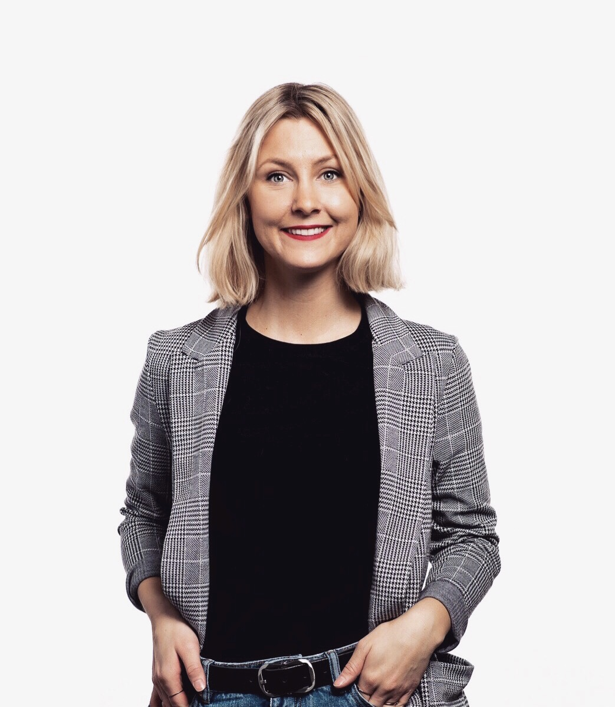
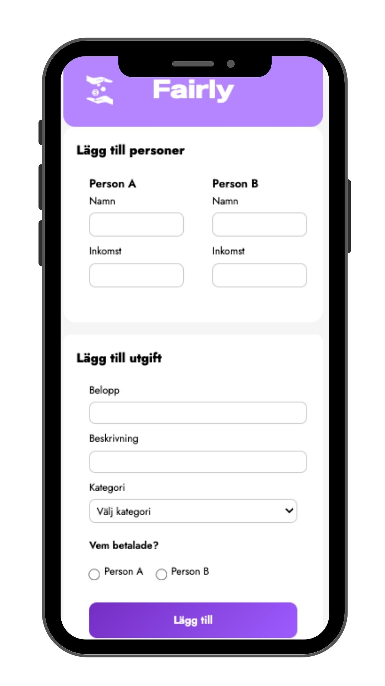
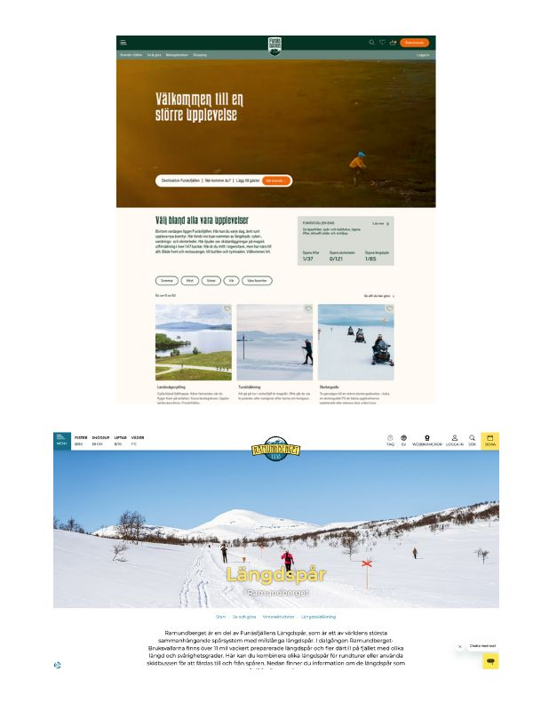
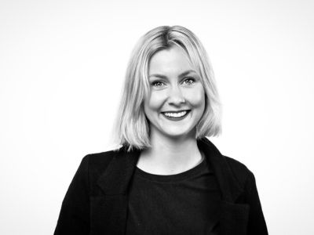

Portfolio
Jennie
Modd
Front End Developer &
Friluftsälskande norrlänning som drivs av att skapa digitala upplevelser – där webb, innehåll, strategi och resultat möts.

Bio

Bakom skärmen
34-årig hälsingetjej som hamnat i Funäsdalen och trivs som bäst ute i naturen året runt. Fjällvandring, utförsåkning, längdskidåkning och ridning slår mitt hjärta lite extra för, och jag drivs av äventyr, utmaningar och möjligheten att ständigt lära mig nya saker.
Som person är jag nyfiken och öppen, och jag testar mig gärna fram. Hur vet man annars vad som fungerar? Jag trivs i miljöer där jag får kombinera kreativitet med strategi och är van att arbeta självständigt och driva projekt framåt. Samtidigt värdesätter jag engagemang i grupp, känslan av sammanhang + härliga kollegor!
Jag är utbildad Digital Marknadsförare med över åtta års erfarenhet inom branschen, med fokus på content marketing, konverteringsoptimering och digital strategi. Genom åren har jag arbetat brett med att bygga och driva marknadsföringsinsatser, från kundresor och strategi till kampanjer, analys, innehållsproduktion och uppföljning.
Jag har ett särskilt intresse för konverteringsoptimering, användarupplevelse och engagemang, och drivs av att skapa digitala upplevelser som både känns bra och gör skillnad. Just nu studerar jag Front End Developer sedan December 2025 och utforskar hur jag kan kombinera teknik, design och data för att skapa ännu bättre användarupplevelser. Denna portfolio kommer därför att uppdateras kontiunerligt.
Fun facts
Frontend projekt - som är värda att nämnas (so far)

Fairly – Smart budgetapp för par
Budgetapp för sambos med fokus på rättvis kostnadsfördelning.
TypeScript • Vite • Sass • LocalStorage • HTML
Gottfrids Munkar – E-handel i JavaScript
E-handel byggd i JavaScript med fokus på interaktivitet och användarupplevelse.
JavaScript • Vite • Sass • LocalStorage • HTMLTidigare uppdrag

Mina tidigare webbprojekt
Webbansvar – Destination Funäsfjällen
Jag hade det övergripande ansvaret och projektledde arbetet med att ta fram en ny webbplats för Destination Funäsfjällen. Rollen innebar ansvar för hela processen, från förstudie och innehållsstrategi till struktur, kravspecifikation, beställningar och SEO-arbete. En viktig del i projektet var den initiala analysen, där jag utvärderade den befintliga webbplatsens prestation, identifierade målgrupper och kartlade kundresan. Detta låg till grund för en tydlig riktning för den nya webbplatsens syfte och struktur. Jag arbetade nära specialister inom olika områden och ansvarade för att sätta mål, tydliggöra krav och säkerställa att projektet drevs framåt enligt plan. Webbplatsen byggdes i WordPress.
Resultat
- 100 % ökning av organisk trafik på ett år
- 29 % intäktsökning under samma period
- Ökad synlighet på mer specifika och frågebaserade sökningar och AI-sökningar
Webbansvar för Ramundberget Alpina AB
Jag ansvarade för webbplatsen för Ramundberget Alpina AB och arbetade i Episerver. När jag tillträdde var webbplatsen nyligen lanserad, men innehållet var främst anpassat för redan befintliga besökare. Mitt fokus blev att anpassa innehållet för nya användare genom att tydliggöra erbjudandet, förbättra strukturen och skapa SEO-optimerat innehåll inom ramen för befintlig design.
Resultat
- 20 % ökning av organisk trafik på ett år
- 25 % intäktsökning under samma period
Kontakt

Mina kontaktuppgifter
Jennie Modd
Rörosvägen 65
846 72 Funäsdalen